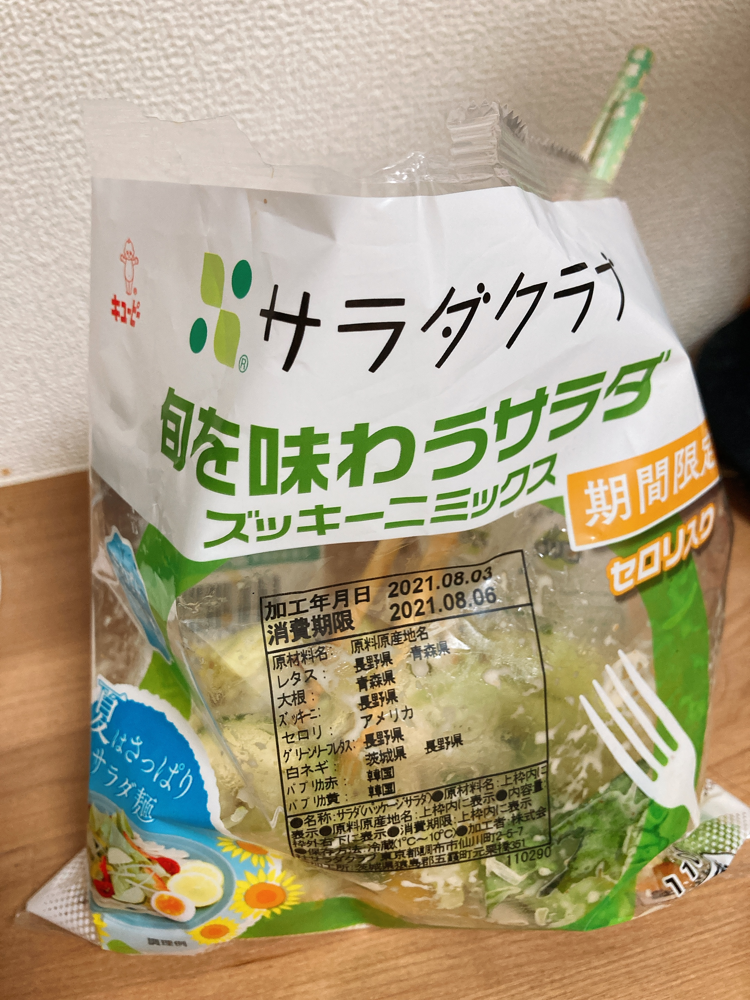

午前、進捗できないがち
533文字
所詮早起きしたところで、午前中は集中できないという事実を知ってしまった。昼飯食べて同行してきた眠気をなんとかやり過ごした後の集中っぷりはすごいんだけど、午前中の活動時間は増やしても有効活用できないという。かなしい。
π終わるまではやっぱ夜型生活続けたほうがよさそうまである。受験期の私は9時台から勉強してたはずだけど、あれどうやってたんだろうね。
夏休みは昼飯の準備に時間を取れないので、時短自炊を模索しようと思っていたわけだけど、カット野菜の袋にドレッシング入れて箸突っ込んで食べるのがもう最適解かもしれない。（ずぼら飯いやな人閲覧注意ね）。

カット野菜、この量の種類の野菜をきっちり1人分切って準備する苦労を知ってるとめちゃくちゃ安い。特にこの期間限定ズッキーニミックス、ズッキーニの味がちゃんとして草食ってる感がすごくてめちゃくちゃQOL高かったので、我こそはという草好きはぜひ。
ちゃんと草むしゃむしゃするとそれだけでお腹いっぱいになれるのいいよね。心做しか野菜ちゃんと食べた日のほうが調子いい気がするし。昼は野菜メインのご飯にして、夜はぱーっと外でラーメンでも食べる夏休みにしようと思っている。ここにトマト切って足したり鶏肉足したりして改良していこうかなと考え中。